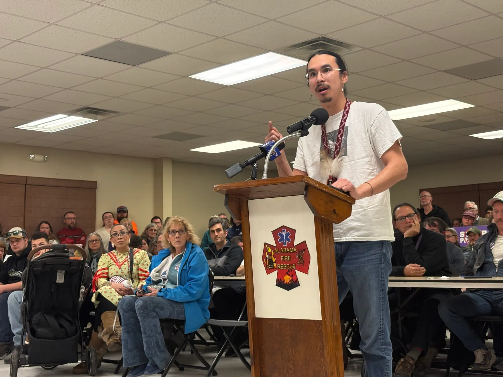

Residents — including members of the Tonawanda Seneca Nation — are organizing to oppose a proposed power plant in Genessee County. The single plant would need roughly the equivalent of 20% of the daily energy generated by the nearby Niagra Falls hydroplant to operate, enough to power up to 400,000 homes.